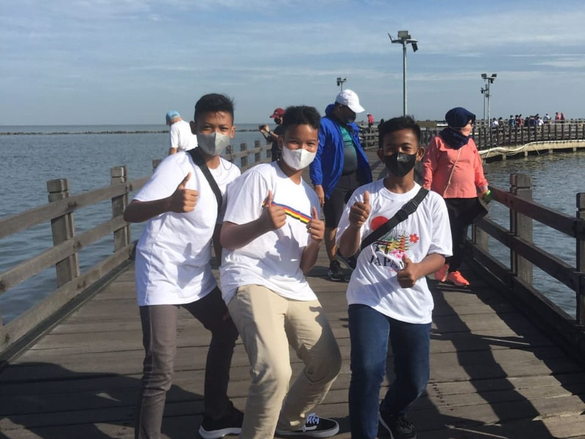
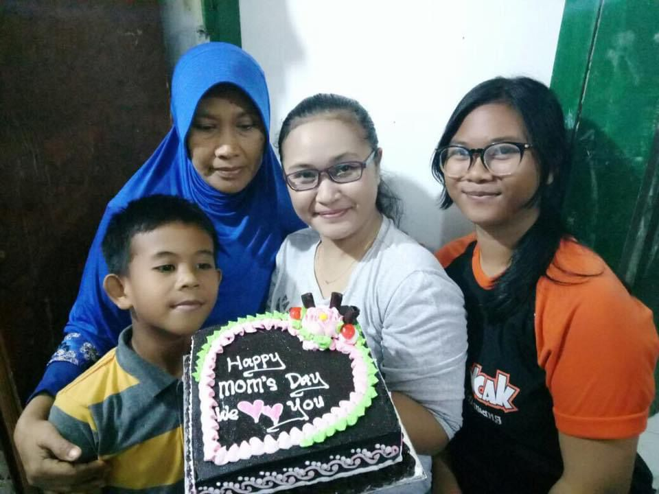

Ternyata rasanya begini ya, ketika sejak kecil harus kehilangan peran orang tua. Di usia yang masih sangat belia, aku sudah dihadapkan dengan rasa sakit dan trauma. Di saat anak-anak lain tumbuh dengan kasih sayang dan kehadiran orang tua yang utuh, aku malah harus bertanya-tanya: kepada siapa aku harus mencari figur orang tua? Sejak kecil aku sudah sering dititipkan ke Mamah dan saudara. Ibu dan ayah kandungku bercerai sejak aku masih kecil. Jujur, dulu aku sempat merasa takut pada ayah kandungku sendiri, hingga baru memberanikan diri untuk bertemu lagi saat duduk di bangku SMP. Ibu baru mulai merawatku kembali saat aku kelas 1 SD karena saat itu beliau ingin menikah lagi.
Sejak saat itu, aku tinggal bersama Ibu dan Ayah. Namun, hal yang kudapatkan justru diwarnai kekerasan. Meskipun sifat keras Ayah ada gunanya untuk membentuk diriku sekarang, trauma masa kecil itu tetap membekas dan sulit dilupakan. Bahkan Kakak lebih memilih berpisah dan tinggal bersama Mamah, sementara aku terus ikut bersama Ibu hingga kelas 6 SD. Aku sudah lelah dan bosan mendengar pertengkaran antara Ibu dan Ayah. Aku sempat berharap tidak akan pernah ada pertengkaran di keluargaku, tetapi kenyataannya sejak SD aku sudah menyaksikan hal itu berulang kali sampai merasa sangat capek.
Seiring berjalannya waktu, suasana sempat membaik. Namun saat SMP, aku memilih untuk tinggal terpisah dari Ibu dan Ayah. Benar saja, tak lama kemudian Ibu dan Ayah bercerai lagi. Aku tinggal di Anjun, merasa kehilangan arah, dan sempat salah pergaulan. Beruntung aku tidak terjerumus terlalu jauh karena aku kasihan melihat Mamah yang ingin melihatku menjadi anak baik dan sukses—membuktikan kepada Ayah dan Ibu bahwa aku bisa berhasil meskipun keluargaku hancur.
Setelah itu, Ayah dan Ibu sempat rujuk kembali dan memaksa aku untuk ikut tinggal bersama mereka. Bahkan Ayah dan Ibu sempat bertengkar hebat dengan Mamah dan Kakak karena aku menolak ikut. Mereka mengira aku dipaksa tinggal di Anjun, padahal itu murni kemauanku sendiri. Aku merasa nyaman dan tenang di Anjun karena bisa bebas tanpa harus terus-menerus mendengar pertengkaran. Namun pada akhirnya, aku terpaksa mengalah dan ikut kembali karena Ayah dan Ibu berjanji akan berubah. Sayangnya, memasuki masa SMK, janji itu terbukti palsu karena kalian bercerai lagi.
Aku sangat iri melihat rumah orang lain yang terpajang foto keluarga utuh. Aku iri melihat anak-anak lain di luar sana masih bisa berkumpul bersama keluarga yang lengkap. Alangkah bahagianya jika memiliki keluarga yang cemara (meskipun aku tahu setiap keluarga pasti punya masalahnya masing-masing). Mulai sekarang, aku sudah malas memikirkan urusan keluarga. Aku ingin fokus memikirkan diriku sendiri—bagaimana caranya agar aku bisa bertahan hidup hingga nanti. Aku sudah capek dibebani trauma keluarga sejak kecil.
Sekarang Bunda sudah menikah lagi dan meninggalkanku sendirian di Karawang? Tidak apa-apa, Bun. Bunda sudah ikut bersama suami Bunda yang sekarang di Jakarta beserta anak tirinya yg bunda sering urus daripada aku anak kandung Bunda. Aku gampang, aku bisa urus diriku sendiri karena sudah terbiasa ditinggal sejak kecil, aku ikhlas ko Bu. Aku sudah besar dan pasti bisa melewati semuanya.
Aku sudah bingung harus bagaimana lagi dan tidak mau berdebat dengan Bunda. Setiap kali bertemu Ayah Sule, aku selalu merasa tidak enak karena Ayah sering menanyakan kabar Bunda. Tapi apakah Bunda pernah menanyakan kabar Ayah? Bunda justru selalu menghindar. Sekarang Bunda sudah tinggal bersama keluarga barunya, Ayah Sule sudah bekerja di Bali, dan tersisa aku sendirian di sini. Untuk kalian semua, sehat-sehat terus ya. Dede selalu mendoakan kalian dari sini. Walaupun kalian mungkin ingat atau tidak, yang terpenting aku sebagai anak akan selalu ingat bahwa kalian adalah orang tua Dede.
Meskipun keluargaku berantakan, aku berjanji hidupku tidak akan ikut berantakan. Aku tidak akan pernah melupakan Ayah dan Bunda yang sudah merawat serta membiayai hidupku. Sekarang aku sudah dewasa dan ini adalah jalan yang harus kutempuh. Aku lebih memilih tinggal di sini bersama Kakak karena aku sudah tidak mau ikut campur lagi dengan urusan orang tua. Meskipun keluargaku hancur, kelak jika aku memiliki keluarga sendiri, aku akan berusaha membangun keluarga yang harmonis agar anakku nanti tidak merasakan apa yang kurasakan sekarang—cukup aku saja yang mengalami, jangan sampai anakku merasakan hal yang sama.
Terkadang orang tua sering menaruh banyak harapan kepada anak sampai lupa bahwa anaknya ini juga manusia biasa. Nyatanya aku tidak sekuat itu. Aku bisa menangis, aku bisa kecewa, hanya saja aku selalu menyembunyikan semuanya. Aku hanya manusia biasa.

Aku ingin mengucapkan terima kasih kepada diriku sendiri karena sudah kuat bertahan sejauh ini dan mampu melewati setiap rintangan dari kecil hingga sekarang. Aku sangat bersyukur memiliki jiwa dan fisik yang kuat, meskipun terkadang lelah dan letih itu kerap datang. Terima kasih sebanyak-banyaknya untuk diriku sendiri. Akhirnya kita sampai di titik ini. Kalau dibilang ingin menyerah, sebenarnya tidak juga. Hanya saja terasa sangat lelah. Sesekali boleh kok merasa, "Kok rasanya hidup ini berat banget, ya?" Walaupun kita tahu di luar sana ada yang ujiannya lebih berat, toh kita selalu bisa melaluinya. Menjadi kuat bukan berarti kita tidak boleh mengeluh, kan?
Kadang terlintas di pikiran: kapan ya aku bisa hidup sebahagia mereka? Rasanya membahagiakan sekali melihat kehidupan orang-orang di luar sana. Namun ingatan itu sering kali menampar diriku sendiri, memaksaku tersenyum dan terus melanjutkan perjalanan meski dalam kelelahan. Mereka pun manusia biasa yang pasti memiliki kesedihan tersendiri, mungkin porsinya lebih besar, hanya saja tidak mereka tunjukkan.
Dunia memang berputar—kadang kita di atas, kadang di bawah. Namun sejauh ini, setiap kali berada di bawah, kita selalu berhasil melewatinya, kan? Jadi, jangan pernah menyerah! Hidup adalah alasan kenapa kamu harus bermimpi, karena sejatinya kamu terlahir sebagai pemenang, bukan pecundang. Untuk apa menyerah jika kita masih sanggup bertahan? Tetaplah bermimpi dan abaikan perkataan orang lain. Tetaplah melangkah walau sesekali terjatuh dan sulit untuk berdiri. Bangkit yuk! Mimpi tidak akan pernah jadi nyata kalau kita hanya tidur dan bermalas-malasan.

Terima kasih banyak untuk kalian yang dari SMP sampai sekarang masih sering berkumpul bersama. Terima kasih karena selalu ada saat aku membutuhkan bantuan dan selalu memberikan dukungan setiap kali aku menghadapi masalah. Tidak terasa pertemanan kita sudah berjalan lebih dari 3 tahun. Sudah banyak kenangan yang kita lewati bersama. Semoga kelak kita semua menjadi orang sukses, bisa berkumpul kembali, dan tidak saling melupakan.
Terima kasih juga karena saat kalian mengetahui kondisi keluargaku, kalian justru merangkul, membantu, dan mendukungku hingga aku bisa tetap kuat sampai sekarang. Aku tidak akan pernah melupakan kebersamaan kita, baik dalam suka maupun duka. Sukses untuk kita semua! Semoga nanti setelah lulus sekolah tidak saling melupa, ya. Kita kan punya tradisi acara mukbang mie setahun sekali, hehe. Aku sangat bersyukur bisa bertemu kalian. Sehat-sehat selalu untuk TRIO PINTER!

Terima kasih untuk Mamah yang sudah selalu mendukung Dede selama ini. Terima kasih sudah merawat Dede dari kecil dan selalu memberikan motivasi agar Dede bisa menjadi anak yang membanggakan. Mamah selalu mengingatkan bahwa kita tidak boleh menaruh dendam kepada orang tua, seburuk apa pun sifat mereka. Terima kasih banyak ya, Mah. Dede minta maaf kalau selama ini sering merepotkan dan membuat Mamah kepikiran karena urusan Bunda dan Ayah.
Terima kasih juga untuk Kakak yang selalu mendukung Dede dalam hal apa pun, termasuk dalam hobiku. Kakak selalu ada di samping Dede meskipun kita kadang sering bertengkar. Semoga rasa trauma masa kecil yang kita alami bisa perlahan sembuh ya. Meskipun dari luar kita terlihat baik-baik saja. Kakak selalu membantu Dede dalam banyak hal, Dede sangat senang punya sosok Kakak seperti Kakak. Sekarang Kakak sudah menikah dan tersisa Dede sendirian di sini. Tidak terasa Kakak sudah membangun keluarga baru. Semoga di keluarga baru nanti, Kakak tidak perlu merasakan lagi masa-masa kelam seperti dulu. Dede di sini tidak apa-apa ditinggal kalian semua. Dede kuat dan bisa bertahan melihat kalian bahagia bersama keluarga baru masing-masing. Terima kasih juga, karena di acara pernikahan Kakak, Dede akhirnya bisa bertemu dengan ibu tiri dari Ayah kandung Dede untuk pertama kalinya setelah belasan tahun.